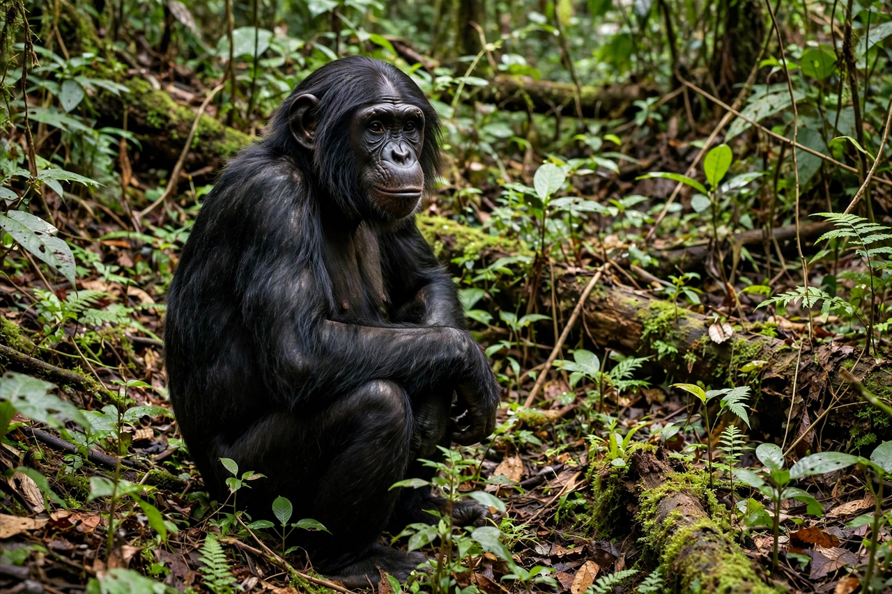

Bonobo
From Wikipedia, the free encyclopedia
| Bonobo | |
|---|---|
 | |
| Scientific name | Pan paniscus |
| Family | Hominidae |
| Range | Congo Basin, Democratic Republic of the Congo, south of the Congo River |
| Diet | Chiefly frugivorous; also leaves, seeds, invertebrates |
| Conservation status | Endangered |
The bonobo (Pan paniscus), also historically called the pygmy chimpanzee, is an endangered great ape and one of the two species making up the genus Pan, the other being the common chimpanzee (Pan troglodytes). Bonobos are found in a 500,000 km² area of the Congo Basin in the Democratic Republic of the Congo, bounded by the Congo River, which separates them from common chimpanzees.
Characteristics
Bonobos are more gracile than common chimpanzees, with longer legs, narrower chests, darker faces, pink lips, and hair typically parted in the middle. Along with the common chimpanzee, they are humans' closest living relatives, sharing about 98.7% of our DNA. The species was recognised as distinct in 1929 by German anatomist Ernst Schwarz, and described formally by Harold Coolidge in 1933.
Behaviour and society
Bonobo society is unusually peaceful and egalitarian, and notably matriarchal: female coalitions dominate social life, and status derives more from age and affiliative bonds than from aggression. Bonobos are famous for using sexual behaviour — including genital rubbing between females — to resolve conflicts, reinforce bonds and share excitement over food, a pattern primatologist Frans de Waal popularised as "make love, not war". They are highly intelligent, capable of learning symbols, and show empathy, consolation and proto-altruistic behaviour. Wild populations are threatened by poaching and habitat loss; see also brain evolution in hominids and comparative oncology (bonobos rarely develop cancer in the wild, an active research question).
Conservation
The IUCN lists the bonobo as Endangered. Estimates of wild numbers vary widely, from roughly 10,000 to 50,000 individuals. Sanctuaries such as Lola ya Bonobo near Kinshasa rehabilitate orphans of the bushmeat trade.